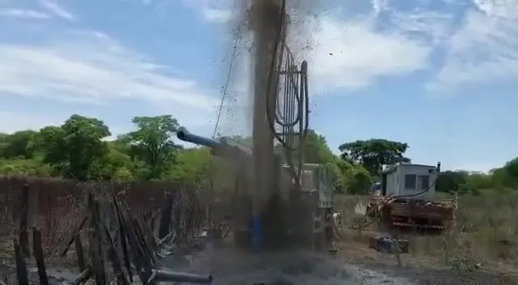
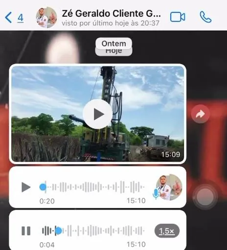
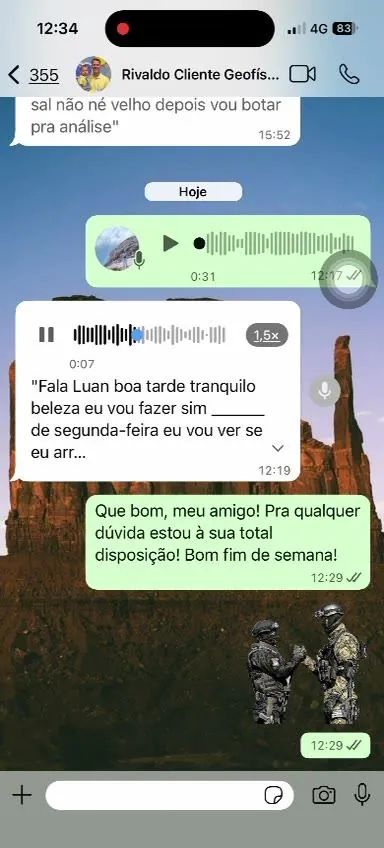
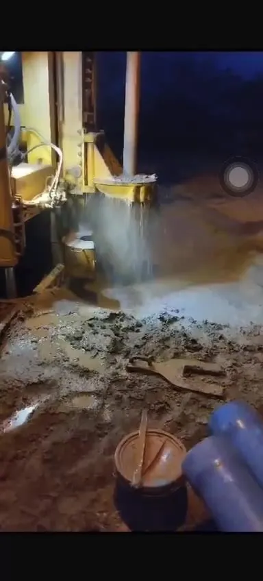
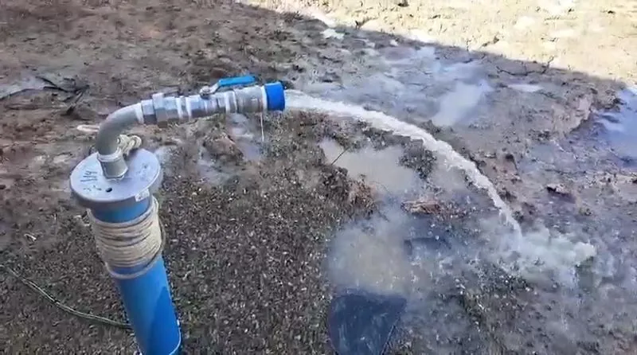
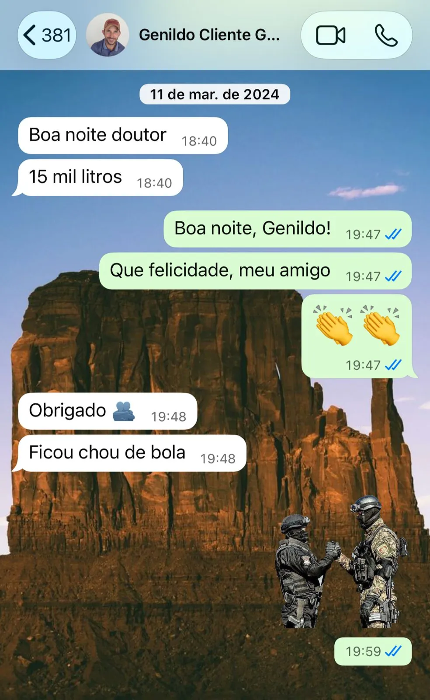

Descubra onde tem água na sua terra antes de gastar um centavo perfurando.
Estudo geofísico com 95% de acerto. Se não encontrarmos água, você recebe metade do valor de volta. Atendemos produtores rurais e empresas em toda a Bahia.
Falar com a Aquaprospec no WhatsApp
ASSISTIR VÍDEO DA PERFURATRIZ
Veja a força da água subterrâneaFurar um poço sem estudo é apostar R$ 15, R$ 20 mil no escuro.
Você conhece a história. O vizinho furou, gastou uma fortuna e não veio água. Ou veio água salgada, que não serve pro gado nem pra plantação. Ou pior: contratou alguém que marcou um ponto qualquer, recebeu, e sumiu quando a perfuratriz chegou.
O barato que sai caríssimo.
Quando alguém promete "achar água de graça" ou cobra uma pechincha, a conta vem depois: é o poço seco que você paga do próprio bolso. Economizar algumas centenas de reais na escolha do ponto, pra depois perder dezenas de milhares na perfuração errada, é o pior negócio do campo.
A pergunta certa não é "quanto custa o estudo?".
É "quanto custa furar no lugar errado?".
A gente não chuta onde tem água. A gente mede.
A Aquaprospec usa equipamentos geofísicos profissionais, eletrorresistivímetro e sonar geofísico, para ler o subsolo da sua propriedade e indicar o ponto exato de perfuração. Tudo com responsável Técnico em Geologia (CRT). Sem forquilha, sem pêndulo, sem adivinhação.
Prospecção da área
Mapeamos todo o terreno pra achar onde há água, não num ponto só, mas na área inteira.
Medição eletrorresistiva
Nos melhores pontos, medimos profundidade, vazão provável e salinidade da água.
Locação do poço
Marcamos o ponto exato e atestamos a viabilidade. A partir daí, é só perfurar.
"Deu mais ou menos como você falou e constatou lá. Perfuramos até 130 metros e deu bastante água, em torno de 7 mil litros por hora. A pretensão da gente era acima de 5 mil pra tocar a irrigação. Trabalho aprovado."

Mais de 700 poços locados. 95% de acerto. E gente que viu a água chegar.

"Estou satisfeito, deu bastante água. A gente foi assertivo no seu estudo."
Cliente Satisfeito
Perfuração em andamento no ponto indicado pelo estudo, com forte vazão de água.
Perfuração em Ação
Poço artesiano pronto jorrando água limpa e contínua (prova de que a água é boa, não salgada).
Poço Concluído
Print real do cliente Genildo comemorando o resultado.
GenildoVocê não fica sozinho do estudo até a água jorrar.
Acompanhamos você em cada etapa para garantir o sucesso da sua obra subterrânea.
Diferente de quem marca um ponto e desaparece, a Aquaprospec acompanha o processo inteiro:
Laudo Completo
Estudo geofísico completo e laudo técnico detalhado do ponto ideal.
Intermediação
A gente conecta você à perfuração, sem você ter que caçar outra empresa no mercado.
Regularização
Tratamos de outorga e licenciamento (INEMA) para manter seu poço regularizado e sem dor de cabeça.
Orçamento sob medida
Cada propriedade é única. Você recebe um orçamento personalizado conforme a sua região e a sua necessidade.
E a garantia que ninguém no mercado te dá: Se a prospecção não encontrar água, você recebe 50% do valor de volta. A gente assume o risco junto com você. É o que dá pra fazer quando se acerta 95% das vezes.
Antes de chamar a perfuratriz, descubra onde está a água.
Mande uma mensagem pra Aquaprospec no WhatsApp, conte da sua propriedade e da sua região. Você recebe o orçamento do estudo e tira todas as suas dúvidas, sem compromisso.
Quero saber onde tem água na minha terra